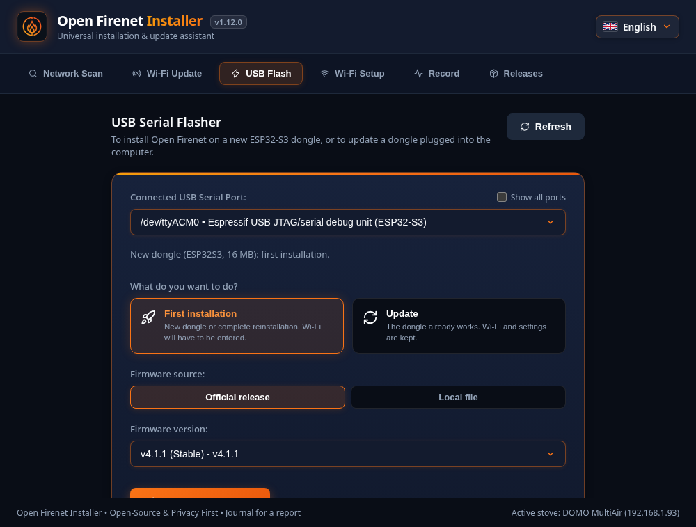

Get started
From an empty board to a stove you control from your browser, in five steps.
-
Check your stove's firmware version
On the stove screen, open the Info menu and read the mainboard software version (for example 2.27 or 2.29). Then look it up on the compatibility page.
-
Get the hardware
You need two things:
- An ESP32-S3 development board with native USB. The chip must be an ESP32-S3: an ESP32, ESP32-C3 or a board with only a UART bridge chip (CH340, CP2102) will not work.
- A USB data cable from the board to the stove's USB-A socket. Charge-only cables do not work.
Which board to buy, and the ones known to work: see Hardware.
Boards with two USB ports: the stove must be plugged into the port labelled "USB" or "USB OTG" (the chip's native USB). The port labelled "UART" or "COM" is only for flashing and logs. This is the most common mistake.
-
Flash the board with the installer
Download the installer for your computer from the releases page, and plug the board into your computer. The installer tells you it found it, reads it and preselects First installation in the USB Flash tab. It downloads the latest official firmware, checks its signature, writes it to the board, then takes you to the Wi-Fi setup.

System File Windows open-firenet-installer-windows-x86_64.exemacOS (Apple Silicon) open-firenet-installer-macos-arm64macOS (Intel) open-firenet-installer-macos-x86_64Linux open-firenet-installer-linux-x86_64.AppImageor the.debpackageYour computer may warn you at the first start. The installer is not signed with a paid publisher certificate, so Windows and macOS do not know it. This is expected.
- Windows: a blue screen "Windows protected your PC" (Microsoft Defender SmartScreen). Click More info, then Run anyway.
- macOS: the file is a plain program. In the Terminal, make it executable with
chmod +xfollowed by its name, then start it. If macOS says it cannot be opened or that its developer cannot be verified, open System Settings > Privacy & Security and click Open Anyway.
To check that the file is the genuine one, compare its SHA-256 with the
SHA256SUMSfile published with each release.On Linux, your user must be in the
dialout(oruucp) group to access USB serial ports. If the board is not found, hold its BOOT button while plugging it in. -
Connect the bridge to your Wi-Fi
Either enter your Wi-Fi name and password in the installer's Wi-Fi Setup tab, or do it from your phone:
- Join the Wi-Fi network
Open-Firenet-Setupthat the board creates (no password). - The setup page opens by itself. If not, browse to
http://192.168.4.1. - Pick your home network (2.4 GHz), enter its password and save. The board restarts on your network.

- Join the Wi-Fi network
-
Plug it into the stove
Connect the board's native USB port to the stove's USB socket, then switch the stove off and on at the mains. After about a minute, open
http://open-firenet.local(or the address shown by the installer's Network Scan tab).The page shows your stove model and its state. It has three tabs: Stove (the dashboard and controls), Bridge (Wi-Fi, MQTT, restart) and Diagnostics (link with the stove, log, all values). If a banner says the bridge is not connected to the stove, see Troubleshooting.
Updating later
Once the bridge is on your network, the installer's Wi-Fi Update tab installs new versions without unplugging anything. Your computer and the bridge must be on the same network; if the update times out, see the network requirements.
Optional, since firmware 4.0: protect wireless updates with a password. Plug the bridge into your computer, open the installer's Wi-Fi tab and set an "Update password". The installer asks for it at each wireless update.